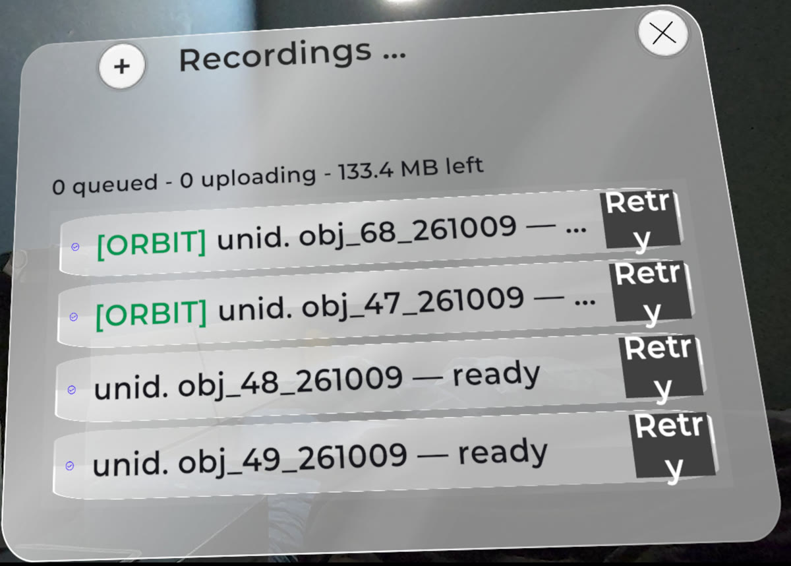

Update since the 5 Oct audit
Recordings
- Batch 2 was split into 2A and 2B. Uploads kept failing, so we built an upload queue first (first in, first out, with visible progress)
- 2B: 43 clips processed. None matched a 3D model, because no 3D models exist yet for the new objects. 10 came out empty and 4 split one object into two
Headset Recordings tab. "133.4 MB left" is one old failed clip being counted. A display fix is written and not yet installed

Old tracker vs FoundationPose
- FoundationPose tracks using the object's 3D model. The old tracker does not
- No smoothing on either side
Clock, live clip. The old tracker spikes. FoundationPose stays upright
Clock, hand task
Clock, back view
Clock plus a second object. Shows the one-object-becomes-two problem
- Problem: both trackers lose the clock when its underside faces the camera. Likely an orbit issue, which we are investigating
Flipping the object mid-orbit
- The tracker loses the object and makes duplicates
- Flipping sometimes does not work at all: the candle and the stopwatch were not found
- The bottle kept the object but added 4 duplicates
Bottle, flipped
Steadier pose (W2, W3)
- W2 = symmetry-aware continuity (keeps the box from jumping between look-alike orientations)
- W3 = W2 plus a speed limit on turning
- Done offline, alongside the FoundationPose work, on the old tracker's pose
- Result: much less shake, but it can lock in the wrong direction. On one clip it ended turned 90 degrees
- Not adopted for the old tracker
- Open: whether W2 or W3 help on top of FoundationPose. Not tested yet. FoundationPose's 3D model already fixes direction, so the gain may be small
Current, W2, W3 on the same clip. Shake gone, W2 ends wrong
Cleaning the masks
- The mask is the outline of the object, with the hand cut out of it
- Fix 1: cut the hand out using this frame's hand box. Small gain. Fewer broken outlines. Not enough to adopt
- Fix 2: restart the mask when it breaks. No effect
- Still a problem: many clips never find the object or start badly. That needs a better start, not cleaning
Fix 1 off (left) and on (right), best case. The old version loses the lower half of the bottle (blue = what the fix recovers). The typical gain is much smaller
Matching
- Each clip is compared with reference recordings. The settings were not tuned
- More reference recordings helped. Wrong matches in a replay of 107 objects: 8, then 2, then 0 (counted by reading, not confirmed labels)
- Matching only helps once an object has a 3D model. That is why none of the 2B clips matched